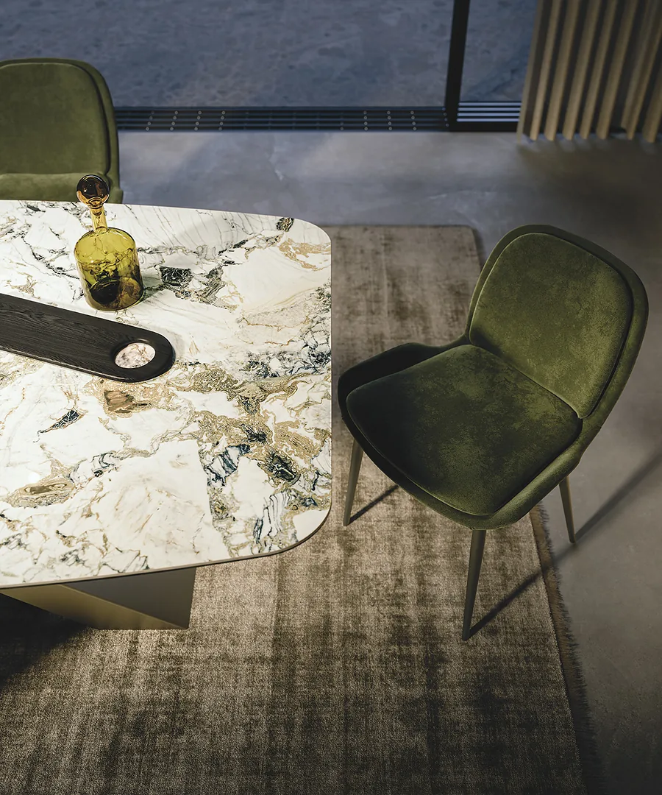
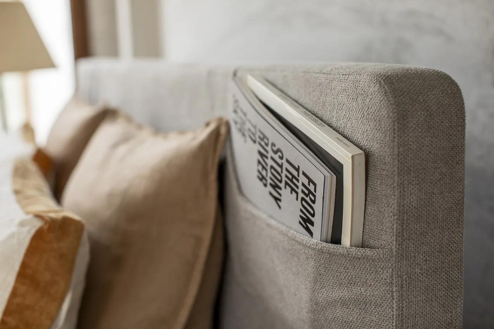
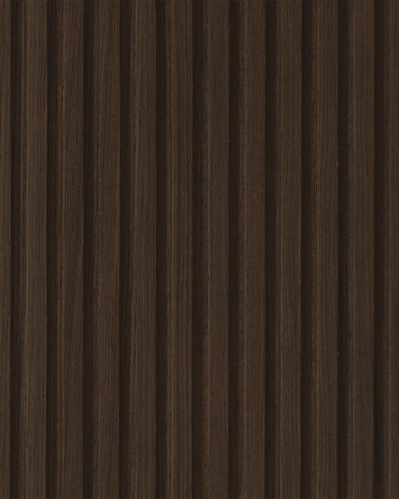

Mobilier, cuisines et sur mesure — Leval-Trahegnies, depuis 1991
Votre intérieur, de la première idée à la pose.
4,6 sur 5 sur 85 avis Google (nouvel onglet)
Salons, tables et literie à voir et à essayer au magasin ; cuisines et sur mesure à concevoir avec votre conseiller, du premier croquis à la pose.
- Salons, relax et literie à essayer
- Première visite et conseil offerts
- Du lundi au samedi, avec ou sans rendez-vous
Venir au magasin
Parlons de votre intérieur.
Horaires
- Lun.
- 13h30 – 18h30
- Mar.–sam.
- 10h30 – 18h30
- Dim.
- Fermé
Adresse
Route de Charleroi 160/1
7134 Leval-Trahegnies (itinéraire, nouvel onglet)
Parking facile d’accès.
Itinéraire (nouvel onglet)Téléphone
Les univers
Trois univers, un intérieur qui vous ressemble.
-

OntarioAkante · table en céramique -

GalaMax Divani · vu de dessus -

GoldSedit · céramique marbrée -

MetropolisStosa · cuisine à îlot central


-

VeldaBoxspring aux lignes nettes, pieds métal -

FlyVelda · une poche dans la tête de lit -

CorintoTomasella · lit tapissé et chevets


-

DressingTomasella · dressing ouvert -

BibliothèqueTomasella · bibliothèque murale -

CanneléTomasella · chêne cannelé cognac


Au magasin
Ce qui fait la différence.
-

Voir, toucher, s’asseoir
Salons, matelas et tables sont exposés au magasin.
-

Le meilleur de chaque fabricant
L’armoire de l’un, le boxspring de l’autre.
-

Un seul interlocuteur
Du premier croquis à la pose, livré par nos soins.
-

Mesures et projection 3D
Chez vous si vous le souhaitez ; en 3D pour un aménagement.


Avis clients
Ce que nos clients en disent.
« […] Patron à l’écoute… La livraison et l’installation au top ! Ne pousse pas à l’achat mais vous conseille dans un showroom varié à l’atmosphère sereine… »
Mirco P. · avis Google
« L’accueil du patron comme de ses fils est parfait. Le service est top. Les conseils sont très clairs. Je reviendrai »
Françoise D. · avis Google
« Parfait, bons conseils, délais respectés, livreurs efficaces, rapides pros. »
Chantal F. · avis Google


Nos fabricants
Des fabricants européens, choisis pour leur design et leur savoir-faire.
Nous sélectionnons des collections aux styles et aux finitions variés. Au magasin, nous vous aidons à comparer les matières et à accorder les meubles d’une pièce à l’autre. Certains modèles sont exposés ; d’autres se découvrent sur catalogue et se commandent dans les configurations proposées par nos fabricants.


Selon votre projetUn premier logement, une maison à embellir, un intérieur plus pratique
Selon votre projet
Des meubles pour chaque étape de votre vie.
Un premier logement, une pièce à repenser ou un intérieur à rendre plus confortable : vos besoins évoluent. Nous vous accompagnons dans vos choix, en tenant compte de votre budget.
-
 01
01Un premier logement
Choisir l’essentiel sans renoncer à la qualité : un canapé confortable, une table à rallonge qui accueille vos invités, une cuisine adaptée à votre espace. Nous vous aidons à trouver le bon équilibre entre usage, style et budget.
-
 02
02Une maison à embellir
Renouveler un salon, accorder une salle à manger à votre séjour ou repenser une cuisine : nous composons avec vous un ensemble harmonieux, jusque dans les matières et les finitions.
-
 03
03Un intérieur plus pratique
Un canapé relax, un lit électrique, des rangements à portée de main : nous cherchons des solutions qui facilitent le quotidien, sans renoncer à l’esthétique.